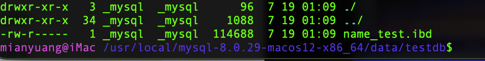

# MYSQL8 新特性
# 窗口函数
窗口函数的作用类似于子查询中对数据进行分组，不同的是，分组操作会把分组的结果聚合成一条记录，而窗口函数是将结果置于每一条数据记录中。
# 窗口函数分类
可分为静态窗口函数和动态窗口函数。
- 静态窗口函数的窗口大小是固定的，不会因为记录的不同而不同
- 动态窗口函数的窗口大小会随着记录的不同而变化。
窗口函数总体上可以分为序号函数、分布函数、前后函数、首尾函数和其他函数，如下表：

# 语法结构
函数 OVER （[PARTTITION BY 字段名 ORDER BY 字段名 ASC｜DESC]） |
或者是
函数 OVER 窗口名 ....WINDOW 窗口名 AS（[PARTTITION BY 字段名 ORDER BY 字段名 ASC｜DESC]） |
- OVER 关键字指定函数窗口的范围
- 如果省略后面括号的内容，则窗口会包含满足 where 条件的所有记录，窗口函数会基于所有满足 WHERE 条件的记录进行计算
- 如果 OVER 关键字后面的括号不为空，则可以使用如下语法设置窗口。
- 窗口名：为窗口设置一个别名，用来标识窗口
- PARTITION BY 子句：指定窗口函数按照哪些字段进行分组。分组后，窗口函数可以在每个分组分别执行。
- ORDER BY 子句：指定窗口函数按照哪些字段进行排序。执行排序操作使窗口函数按照排序后的数据记录的顺序进行编号
- FRAME 子句：为分区中的某个子集定义规则，可以用来作为滑动窗口使用。
# 分类讲解
# 序号函数：
ROW_NUMBER 函数：
RANK 函数：
DENSE_RANK 函数和 RANK 函数相反。
# 分布函数
PERCENT_RANK 函数：
此函数是等级值百分比函数，按照公式 来计算。
其中 rank 的值为使用 RANK 函数产生的序号，rows 值为当前窗口的总记录数。
CUME_DIST 函数:
此函数主要用于查询小于或等于某个值的比例
# 前后函数
LAG (expr,n) 函数：
LAG (expr,n) 函数返回当前行的前 n 行的 expr 值。

LEAD (expr,n) 函数：
LEAD (expr,n) 函数返回当前行的后 n 行的 expr 的值。

# 首尾函数
FIRST_VALUE (expr) 函数
FIRST_VALUE (expr) 函数返回第一个 expr 的值。

LAST_VALUE (expr) 函数：返回最后一个 expr 的值。

# 其他函数
NTH_VALUE (expr，n) 函数：
NTH_VALUE (expr，n) 函数返回第 n 个 expr 的值

NTILE (n) 函数：
将分区中的有序数据分为 n 个桶，记录桶编号


# 字符集的相关操作
# 修改 Mysql5.7 字符集
在 mysql8 之前，默认字符集为 latin1 ，utf8 字符集指向的是 utf8mb3 ，网站开发人员在数据库设计时往往会将编码修改为 utf8。如果遗忘修改默认的编码，就会出现乱码的问题。从 mysql8 开始，数据库默认的编码就是 utf8mb4，从而避免上述乱码的问题。
操作 1：查看默认使用的字符集
show variables like 'character%'; | |
或者 | |
show variables like '%char%'; |
操作 2：修改 my.cnf 配置文件，在配置文件中指定字符集
character_set_server=utf8 |
# 已有库已有表字符集的变更
mysql5.7 版本中，以前创建的库，创建的表字符集还是 latin1。
操作 1：修改已有数据库的字符集
alter database 数据库名 character set 'utf8'; |
操作 2：修改已有表的字符集
alter table 表名 convert to character set 'utf8'; |
# 各级别的字符集（底层原理说明）
mysql 有 4 个级别的字符集和比较规则，分别是：
- 服务器级别
- 数据库级别
- 表级别
- 列级别
- character_set_server：服务器级别的字符集
- character_set_database：当前数据库的字符集
- character_set_client：服务器解码请求时使用的字符集
- character_set_connection：服务器处理请求时会把请求字符串从 character_set_client 转为 character_set_connection
- character_set_result：服务器向客户端返回数据时使用的字符集
设置 server 服务器级别的字符集后，相应的 database 字符集也会跟着变化。
- 当创建数据库时，不指定字符集，则使用 database 指定的字符集
- 当创建表时不指定字符集，则会根据所在库的字符集默认指定
- 当创建字段不指定字符集时，则会根据所在表的字符集默认指定
# 字符集与比较规则
# utf8 与 utf8mb4
utf8 字符集表示一个字符需要使用 1-4 个字节，但是常使用的字符使用 1-3 个字节就可以表示了。而字符集表示一个字符所用到的最大字节长度，在某些方面会影响系统的存储和性能，所以定义了两个概念：
utf8mb3：阉割的 utf8 字符集，只使用 1-3 个字节表示字符。
utf8mb4：正宗的 utf8 字符集，使用 1-4 个字节表示字符。
查看 mysql 支持的字符集命令：show charset；

# 比较规则
Mysql 一共支持 41 种字符集，其中的 Default collation 表示这些字符集中一种默认的比较规则，里面包含着该比较规则主要作用于哪种语言。如 utf8_polish_ci 表示以波兰语的规则比较， utf8_general_ci 是一种通用的比较规则。
后缀表示该比较规则是否区分语言中的重音、大小写。具体如下：

常用操作：
#查看 GBK 字符集的比较规则 | |
show COLLATION LIKE 'gbk%'; | |
#查看服务器的字符集和比较规则 | |
show VARIABLES LIKE '%_server'; | |
#查看数据库的字符集和比较规则 | |
show VARIABLES DATABASE LIKE '%_database'; | |
#查看具体数据库的字符集 | |
show CREATE DATABASE 数据库名; | |
#修改数据库的字符集 | |
ALTER DATABASE 数据库名 DEFAULT CHARACTER SET 'utf8' COLLATE 'utf8_general_ci'; | |
#查看具体表的字符集 | |
show CREATE TABLE 表名; | |
#修改表的字符集 | |
ALTER TABLE 数据库名 DEFAULT CHARACTER SET 'utf8' COLLATE 'utf8_general_ci'; |
# 请求到相应过程中的编码
客户端请求 mysql 服务器时使用 utf8 编码，服务器使用 character_set_client 设置的字符集进行解码，在使用 character_set_connection 设置的字符集把 character_set_client 解码的内容编码到数据库中去查询，查询结果后在使用 character_set_result 设置的字符集编码返回给客户端，客户端在解码。
所以要求设置的编码必须要一致，可以添加如下配置到配置文件里可以指定 character_set_client、character_set_connection、character_set_result 三者的字符集。
[client] | |
default-character-set=utf8 |
# SQL 大小写规范与 sql_mode 的设置
# 查看大小写设置命令
show variables like 'lower_case_table_names'; |

lower_case_table_names 参数值的设置：
- 默认为 0，大小写敏感
- 设置 1，大小写不敏感。创建的表，数据库都是以小写的形式存在磁盘上，对于 SQL 语句都是转换为小写对表和数据库进行查找。
- 设置为 2，创建的表和数据库依据语句上格式存放，凡是查找都是转换为小写进行。
# Linux 下大小写规则设置
当想设置大小写不敏感时，要在 my.cnf 配置文件中 [mysqld] 中加入 lower_case_table_names=1 ，然后重启服务器。
- 但是要在重启数据库实例之前就需要将原来的数据库和表转换为小写，否则将找不到数据库名。
- 此参数适用于 MYSQL5.7，在 Mysql8 下禁止在重新启动 Mysql 服务时将
lower_case_table_names设置成不同于初始化 mysql 服务时设置的lower_case_table_names值。如果非要将 mysql8 是设置为大小写不敏感，具体步骤为：- 停止 mysql 服务
- 删除数据目录，即删除 /var/lib/mysql 目录
- 在配置文件中添加
lower_case_table_names=1 - 重新启动 mysql 服务
# SQL 编写建议

# sql_mode 的设置
sql_mode 会影响 mysql 支持的 sql 语法以及它执行的数据验证检查。通过设置 mysql_mode 可以完成不同严格程度的数据校验，有效的保证数据准确性。
MYSQL 服务器可以在不同的 SQL 模式下运行，并且可以针对不同的客户端以不同的方式应用这些模式，具体取决于 sql_mode 系统变量的值。
mysql5.6 和 5.7 默认的 sql_mode 模式参数是不一样的：
- 5.6 的 mode 默认值为空（即：NO_ENGINE_SUBSTITUTION），其实表示的是一个空值，相当于没有什么模式设置，可以理解为宽松模式。在这种设置下是可以允许一些非法操作的，比如允许一些非法数据的插入。
- 5.7 的 mode 是 STRICT_TRANS_TANLES，也就是严格模式，用于进行数据的严格校验，错误数据不能插入，报 error 错误，并且回滚事务。
# 宽松模式 vs 严格模式
宽松模式
如果设置的是宽松模式，那么在插入数据时，即使给了一个错误的数据，也可能会被接受，并且不会报错。
如：表中有一个 name 字段，类型为 char（10），在插入数据时长度超过了 10，例如‘1234567890abc’，超过了设定的长度，但不会报错，并且取前 10 个字符存上，也就是被存入了 1234567890，abc 忽略了。这就是宽松模式。
严格模式
严格模式上面的情况出现就会报错。
# 模式的查看和设置
select @@session.sql_mode | |
select @@global.sql_mode | |
#或者 | |
show variables like 'sql_mode'; | |
#设置 sql_mode 模式 | |
#session 只在当前会话中生效，关闭当前会话就不生效了。 | |
SET SESSION sql_mode = 想要的模式 | |
#GLOBLA 在当前服务生效，重启 mysql 服务后失效。 | |
SET GLOBAL sql_mode = 想要的模式 | |
#永久设置方式 | |
在my.cnf配置文件中配置sql_mode | |
[mysqld] | |
sql_mode = 想要的模式,可以选择多个模式，多个模式使用，分割。 |
# 常用模式
# 数据库和文件系统的关系
像 InnoDB、MyISAM 这样的存储引擎都是把表存储在磁盘上的，操作系统用来管理磁盘的结构被称为文件系统，所以用专业一点的话来表示就是：像 InnoDB、MyISAM 这样的存储引擎都是把表存储在文件系统上的， 读取数据 时， 存储引擎 会把数据从文件系统中读取出来返回， 写入数据 时，存储引擎会把数据 写到文件系统去 。
# 表在文件系统中的表示
# InnoDB 存储引擎模式
# 在 5.6.6 版本之前
进入 mysql 数据存储目录 data 下

数据库表的数据都存放在 ibdata1 （称为系统表空间）中，进入创建的 testdb 数据库，可以看到：
有三个文件：
db.opt存放的是创建数据库时数据库的配置信息__.frm文件存放的是创建表的结构__.ibd文件存放的是表的数据（也称为独立表空间）5.6.6 之前的版本应该是无。
# 在 5.7 版本
数据库表的数据可以选择存放在 ibdata1 （称为系统表空间）中，进入创建的 testdb 数据库，可以看到：
有三个文件：
db.opt存放的是创建数据库时数据库的配置信息__.frm文件存放的是创建表的结构__.ibd文件存放的是表的数据（也称为独立表空间）。
# 在 8 版本

数据库表的数据可以选择存放在 ibdata1 （称为系统表空间）中，进入创建的 testdb 数据库，可以看到：

不同于 5.7 版本，现在只有一个 __.ibd （独立表空间）文件，不止是存放数据，把表结构也都放入该文件中。
储备知识：
- InnoDB 其实是使用
页作为基本单位来管理存储空间的，默认页的大小为 16kb。- 对于 InnoDB 存储引擎来说，每个索引都对应着一颗 B + 树，该 B + 树的每个节点都是一个数据页，数据页之间不必要是物理连续的，因为数据页之间有
双向链表来维护这些页的顺序- InnoDB 的聚簇索引的叶子节点存储了完整的用户记录，也就是所谓的索引即数据，数据即索引。
为了更好的管理这些页，InnoDB 提出了一个 表空间 或者 文件空间 概念。这个表空间是一个抽象的概念，它可以对应文件系统上一个或多个真实文件（不同表空间对应的文件数量可能不同）。每一个表空间都可以被划分为很多 页 ，我们的表数据就存放在某个表空间的某些页里。
表空间有几种个不同的类型：
# 系统表空间
默认情况下，InnoDB 会在数据目录下创建一个名为 ibdata1 ，大小为 12M 的文件，这个文件就是对应的 系统表空间 ，该文件是 自拓展文件 ，当不够用时会自动增加文件大小。
如果想让系统表空间对应文件系统上多个实际文件，那么可以在 mysql 启动配置对应的文件路径以及它们的大小。
修改 my.cnf 配置文件：
[server] | |
innodb_data_file_path=data1:512M;data2:512M:autoextend |
这样在 mysql 启动时就会创建这两个大小为 512M 大小的文件作为系统表空间，其中 autoextend 表明文件不够用时会自动拓展 data2 文件的大小。
需要注意的一点是： 在一个MYSQL服务器中，系统表空间只有一份。 从 MYSQL5.5.7 到 5.6.6 之间的各个版本中，我们表中的数据都会被默认存储到这个系统表空间。
# 独立表空间
在 mysql5.6.6 之后的版本中，InnoDB 并不会默认把各个表的数据存储到系统表空间中，而是 为每一个表创建一个独立表空间 ，也就是创建了多少个表，就有多少个独立表空间。使用独立表空间来存储数据，会在该表所属的数据库对应的目录下创建一个表示该独立表空间的文件，文件名和表名相同，只不过添加了一个 .ibd 的拓展名而已。
# 系统表空间与独立表空间的设置
可以指定使用 系统表空间 还是 独立表空间 来存储数据，这个功能由启动参数 innodb_file_per_table 控制。
[server] | |
innodb_file_per_table=0 #0 代表使用系统表空间 1 代表使用独立表空间 |
# 证明在 mysql8 中 idb 文件中存放了表的结构信息
需要解析 ibd 文件。可以使用 orancle 提供的一个应用程序 ibd2sdi。在 mysql8 中不需要下载此程序，自带。到存储 ibd 文件的目录下，执行下面的命令：
ibd2sdi --dump-file=student.txt student.ibd |
# MyISAM 存储引擎模式
# 表结构
在该存储引擎模式下，会在数据目录下对应的数据库目录下创建一个专门用来描述表结构的文件：表名 .frm
# 表中数据和索引
索引都是 二级索引 ，数据和索引是分开存放的。所以在文件系统中也是使用不同的文件来存储数据文件和索引文件，同时表数据都存放在对应的数据库子目录下。 例如 test 表使用 MyISAM 存储引擎的话，在数据库中对应的目录小爱就会创建这三个文件：
test.frm 存储表结构 5.7版本是这个文件 test.sdi 8版本是这个文件 | |
test.MYD 存储数据 | |
test.MYI 存储索引 |